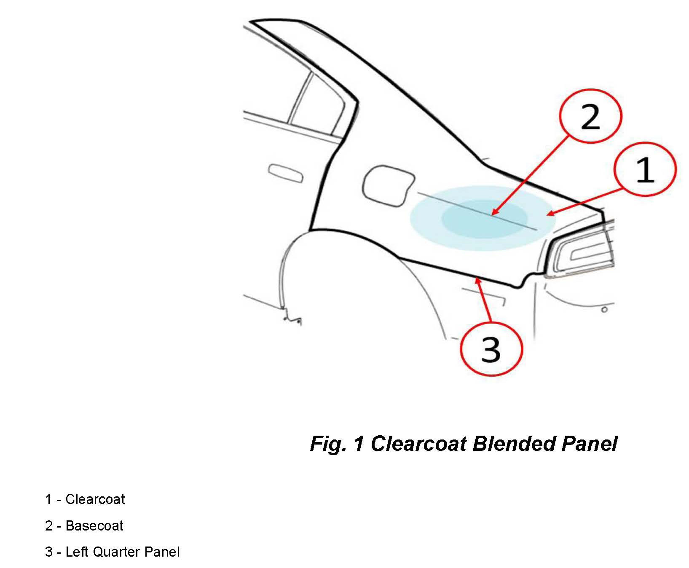
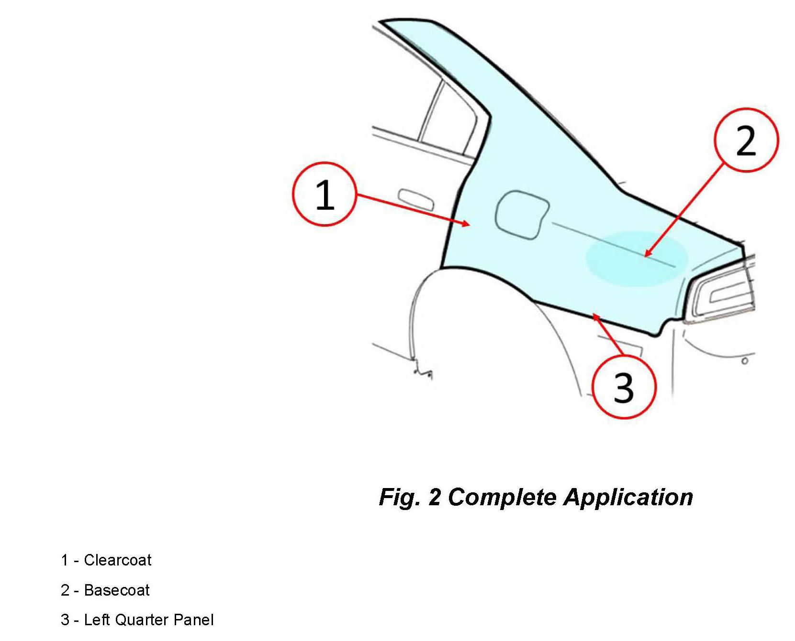

Paint - Clearcoat Blending During Refinish Process
NUMBER: 31-002-13GROUP: Collision Bulletin
DATE: January 31, 2013
SUBJECT:
Blending Clearcoat During The Refinish Process
OVERVIEW:
This bulletin discusses Chrysler's position against the use of partial clearcoat blending.

DISCUSSION:
Partial clearcoat blending is not an approved warranty repair process for Chrysler vehicles. Partial clearcoat blending is a process that generally involves adding solvents to a paint manufacturers clearcoat mixing formula to reduce the viscosity. This will not only degrade the durability of materials but it could also produce additional emissions. Partial clearcoat blending is achieved by adopting processes that are typically used to transition basecoat color on repair areas. Clearcoat should always be applied to the entire surface area of a body panel and mixed to manufacturers specifications. Any vehicle repaired with the partial
clearcoat blending process will prematurely fail and eventually result in a clearcoat delamination condition. An example of clearcoat blending is shown in (Fig. 1).
As shown in (Fig. 1) clearcoat is not applied to the entire quarter panel surface area, but only to a small portion. The repair area will initially appear sufficient but depend on how the process was performed the repair area will begin to degrade in 6 months to 3 years.

Clearcoat (1) has been applied to the entire quarter panel in (Fig. 2) and basecoat (2) was applied to cover the repair area, which is the proper repair process.
NOTE:
This figure is used for demonstration purposes only. Most quarter panel repairs require clearcoat to be applied to the entire side aperture which typically ends at the cowl adjacent to the front fender.
POLICY:
Information Only.
Disclaimer:
This bulletin is supplied as technical information only and is not an authorization for repair.